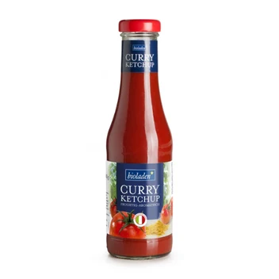

bioladen* Curryketchup 450ml
3,29 €
Hersteller: Weiling GmbH (Erlenweg 134, 48653 Coesfeld) Zutaten: Tomatenmark (75%), Rohrohrzucker, Branntweinessig, Meersalz, Curry (enthält SENF)
Jetzt im Online-Shop kaufen ↗Bestellung & Bezahlung sicher über unseren Partner-Shop bioladen-borna.de